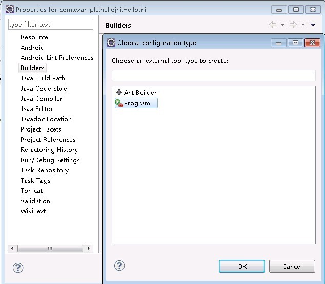
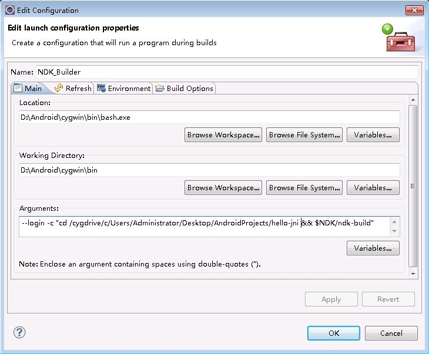
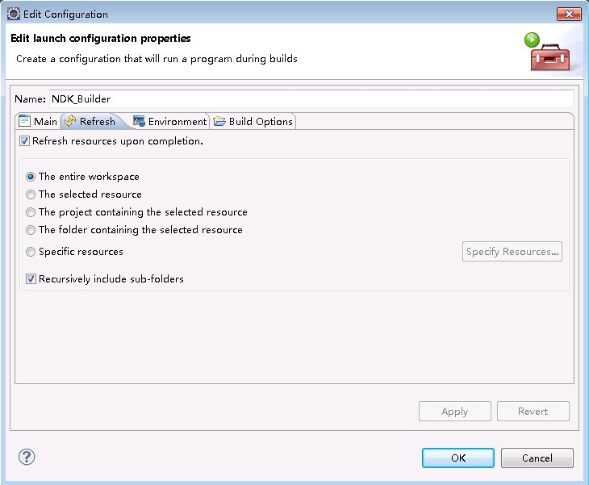
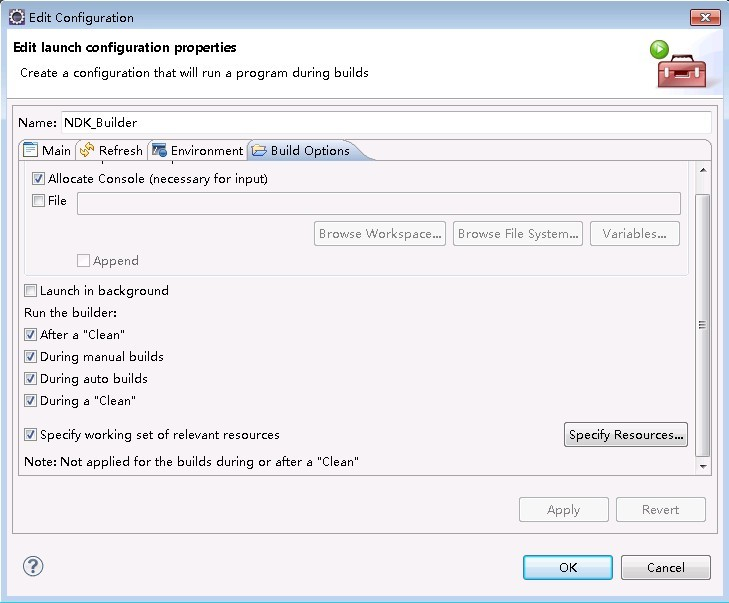
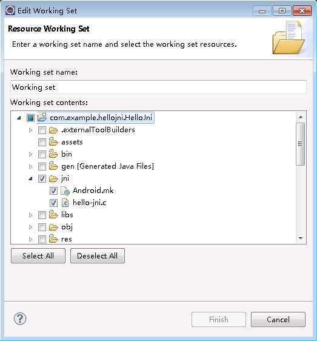

Cygwin的下载与安装
cygwin是一个在windows平台上运行的unix模拟环境，它对于学习unix/linux操作环境，或者从unix到windows的应用程序移植，或者进行某些特殊的开发工作，尤其是使用gnu工具集在windows上进行嵌入式系统开发，非常有用。简单来说，我们直接用他来编译我们的c/c++代码，而不必放到Linux虚拟机或者Linux系统上去编译我们的代码，方便大家在windows上能直接开发并生成我们需要的.so库文件。由于篇幅有限，Cygwin的安装与下载大家可以参考网上的许多帖子。（建议不熟悉Cygwin的童鞋在下载的时候可以把所有的组件勾上，以免发生缺少依赖的软件包情况而产生不愉快）
配置NDK环境变量
- 首先找到cygwin的安装目录，找到一个
home\<你的用户名>\.bash_profile文件，我的是：D:\Android\cygwin\home\bear\.bash_profile。
(注意：若home文件夹下面神马都没有或者没有你用户名的文件夹，解决的办法：首先打开环境变量，把里面的用户变量中的HOME变量删掉，在D:\Android\cygwin\home文件夹下建立名为你用户名的文件夹，然后把D:\Android\cygwin\etc\skel\.bash_profile拷贝到该文件夹下；我这边是第一次bash --login -i时他会自动创建用户名文件夹)。
2. 打开bash_profile文件，添加NDK=/cygdrive/<你的盘符>/<android ndk 目录> 如：（注意：NDK这个名字是随便取的，为了方面以后使用方便，选个简短的名字，然后保存）
1 | NDK=/cygdrive/d/Android/android-ndk-r8e |
- 打开cygwin，输入
cd $NDK，如果输出上面配置的/cygdrive/d/Android/android-ndk-r8e信息，则表明环境变量设置成功了。
用NDK来编译程序（手动编译）
- 现在我们用安装好的NDK来编译一个简单的程序吧，我们选择ndk自带的例子hello-jni，我的位于
D:\Android\android-ndk-r8e\samples\hello-jni(根据你具体的安装位置而定) - 运行cygwin，输入命令
cd /cygdrive/d/Android/android-ndk-r8e/samples/hello-jni，进入到hello-jni目录。 - 输入
$NDK/ndk-build，执行成功后，它会自动生成一个libs目录，把编译生成的.so文件放在里面。($NDK是调用我们之前配置好的环境变量，ndk-build是调用ndk的编译程序) - 此时去hello-jni的libs目录下看有没有生成的.so文件，如果有，你的ndk就运行正常啦！
- 把.so文件拷贝到项目中，并完成JNI调用。
在eclipse中集成c/c++开发环境（开发C/C++代码）
- 装Eclipse的C/C++环境插件：CDT，这里选择在线安装。
首先登录：http://www.eclipse.org/cdt/downloads.php
找到对应你Eclipse版本的CDT插件的在线安装地址。 - 然后点Help菜单，找到
Install New Software菜单 - 点击Add按钮，把取的地址填进去，出来插件列表后，选
Select All，然后选择下一步即可完成安装 - 安装完成后，在eclispe中右击新建一个项目，如果出现了c/c++项目，则表明你的CDT插件安装成功啦
- 或者可以直接在安装ADT的时候勾选
Android Native Development Tools，里面集成了c/c++的开发环境
配置C/C++的编译器（Eclipse自动编译）
打开eclipse，导入ndk自带的hello-jni例子，右键单击项目名称，点击Properties，弹出配置界面，之后再点击Builders，弹出项目的编译工具列表，之后点击New，新添加一个编译器，点击后出现添加界面，选择Program，点击OK。
出现了添加界面：
（1）首先给编译配置起个名字，如：NDK_Builder
（2）设置Location为<你cygwin安装路径>\bin\bash.exe程序，例如：D:\Android\cygwin\bin\bash.exe
（3）设置Working Directory为<你cygwin安装路径>\bin目录，例如：D:\Android\cygwin\bin
（4）设置Arguments为：--login -c "cd /cygdrive/c/Users/Administrator/Desktop/AndroidProjects/hello-jni && $NDK/ndk-build"。上面的配置中的/cygdrive/c/Users/Administrator/Desktop/AndroidProjects/hello-jni是你当前要编译的程序的目录，$NDK是之前配置的ndk的环境变量，这两个根据你具体的安装目录进行配置，其他的不用变，Arguments这串参数实际是给bash.exe命令行程序传参数，进入要编译的程序目录，然后运行ndk-build编译程序，其实就跟手动编译的操作差不多，不过我们把它交给配置好的编译器去做！。
接着切换到Refresh选项卡，勾选以下项：
Refresh resources upon completion
The entire workspace
Recursively include sub-folders
然后切换到Build Options选项卡，勾选以下项：
Allocate Console
After a Clean
During manual builds
During auto builds
During a Clean
之后点击Specify Resources按钮，选择资源目录，勾选你项目的JNI目录即可
最后点击Finish，点击OK一路把刚才的配置都保存下来
（注意：如果你配置的编译器在其它编译器下边，记得一定要点Up按钮，把它排到第一位，否则C代码的编译晚于Java代码的编译，会造成你的C代码要编译两次才能看到最新的修改）